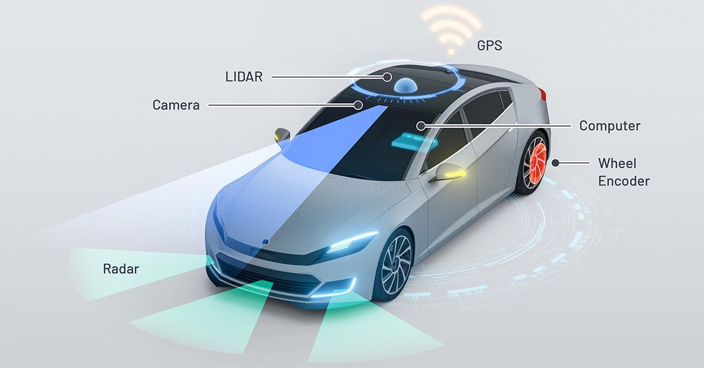
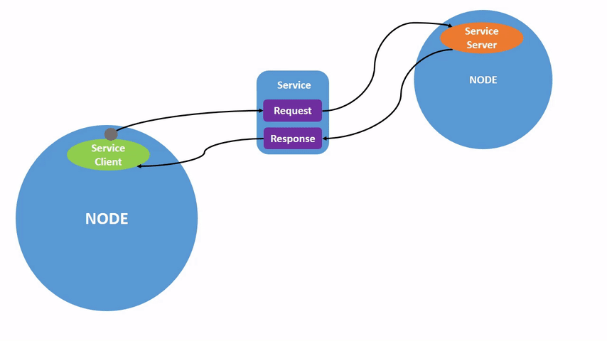
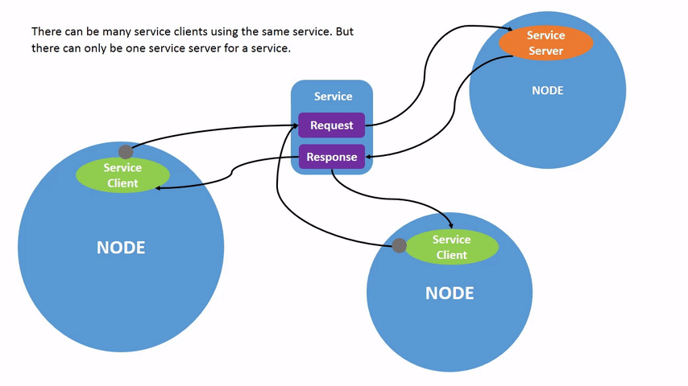
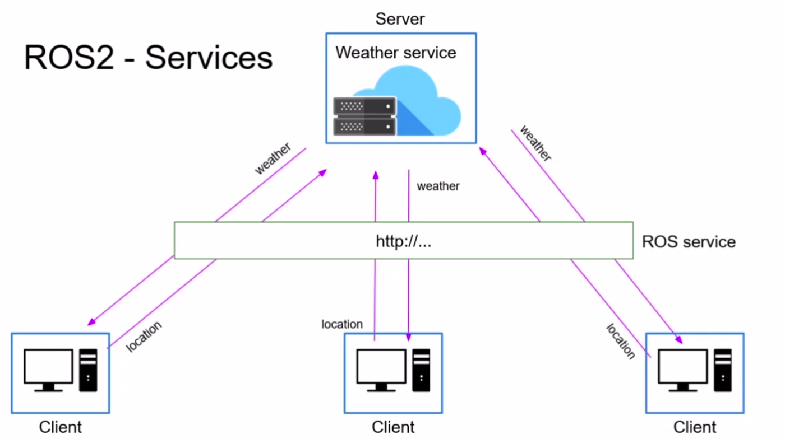
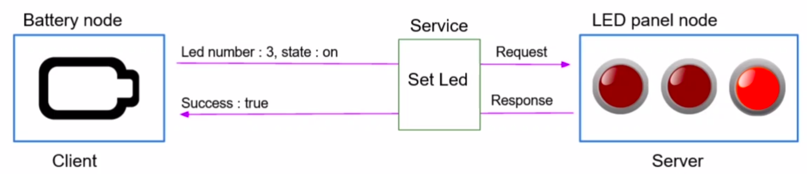
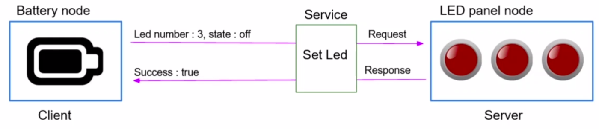
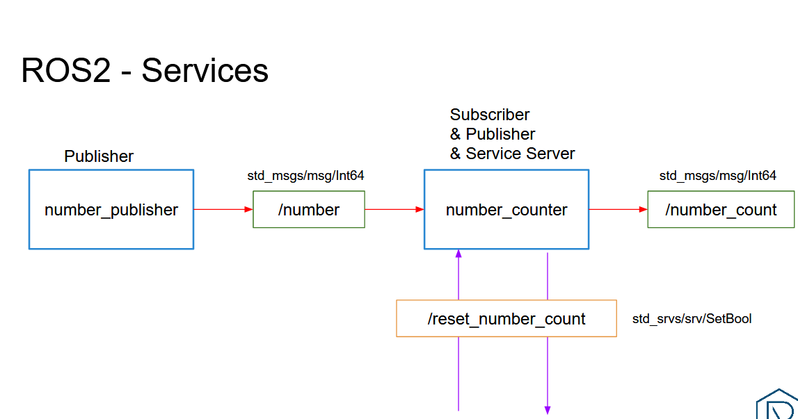
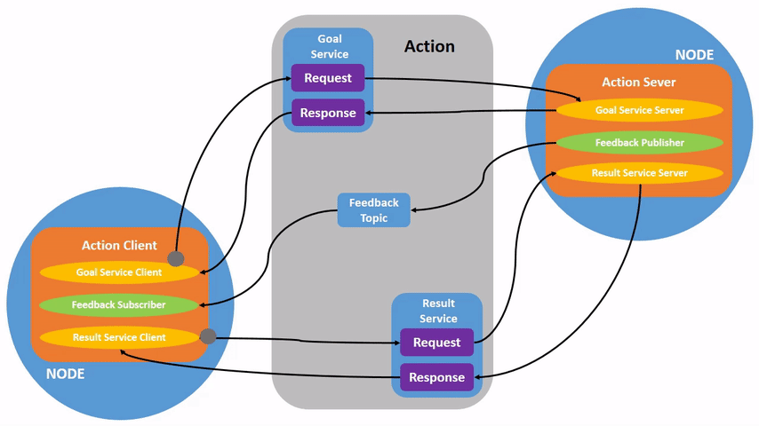

Before any code, get the whole idea in six small steps. Topics you already know from Lecture 3; today adds services (4.1) and actions (4.3).
/scan, /odomA self-driving car is a robot on wheels. Every sensor in the picture is a node, and the onboard computer runs dozens more (perception, planning, control). They talk in exactly these three ways.

/lidar/points/camera/image/radar/objects/gps/fix/wheel/odom/cmd_vel (steer, throttle)Mission control sends one job, "drive to shelf 12", as a topic, a service and an action. Press the buttons and watch who gets an answer, who freezes, and who can stop the robot.
Keep this table in mind during the labs: every row is explained step by step in 4.1 and 4.3.
| Topic 📻 | Service 🛎️ | Action 🎯 | |
|---|---|---|---|
| Pattern | Publish → subscribe | Request → response | Goal → feedback… → result |
| Who talks | Many publishers, many subscribers | One server, many clients | One server, many clients |
| How long | Forever (a stream) | Quick: milliseconds | Seconds to minutes |
| Reply? | None | Exactly one response | Many feedback messages + one result |
| Progress updates | – | ❌ | ✅ feedback |
| Cancel half-way | – | ❌ | ✅ cancel request |
| Can say "no" | – | Only inside the response fields | ✅ accept or reject the goal, then SUCCEEDED / CANCELED / ABORTED |
| Interface file | .msg | .srv: request --- response | .action: goal --- result --- feedback |
| Terminal | ros2 topic pub / echo | ros2 service call | ros2 action send_goal |
| Python | create_publisher / create_subscription | create_service / create_client | ActionServer / ActionClient |
| Robot examples | /scan, /odom, /cmd_vel, camera images | reset odometry, save the map, switch mode, spawn | Nav2 NavigateToPose, rotate to a heading, dock to charger, move an arm |
In the self-driving car picture, the LIDAR sends a new scan 10 times per second to anyone who needs it. Topic, service or action?
/lidar/points). Nobody replies to it.Name two other sensors of the car that would also publish on topics.
/camera/image), radar, GPS (/gps/fix), wheel encoder (/wheel/odom).The driver presses "reset trip odometer" and wants to see "done". Topic, service or action? Why?
"Drive to the university" takes 20 minutes. What would the passenger want while it runs, and which communication type gives it?
In the overview, the drone flying to waypoint A ends with "result: SUCCEEDED". Guess one other way the goal could end.
A service is like a help desk. You walk up (you are the client), ask one question (the request), and the person behind the desk (the server) gives you one answer (the response). There is one desk, but many people can come and ask.
.srv type separated by ---.

Animations: ROS 2 Documentation, "Understanding services", Open Robotics, CC BY 4.0.



Call the adding machine below, then tick "blocking call" and call again: the client's timer stops. This is why every client you write today uses call_async.
---, then response fields.partial(f, a=a).✅ You have the idea. Now build it, one lab at a time: Lab 1 uses services, Lab 2 writes a server, Lab 3 writes a client, Lab 4 debugs them.
Goal: find a service, read its type, and call it from the terminal.
ros2 run turtlesim turtlesim_node
ros2 run turtlesim turtle_teleop_keyros2 service list/clear /kill /reset /spawn /turtle1/set_pen /turtle1/teleport_absolute /turtle1/teleport_relative
Drive a bit so there is a line, then:
ros2 service type /clear
ros2 interface show std_srvs/srv/Empty
ros2 service call /clear std_srvs/srv/EmptyEmpty has nothing above or below the ---, so there's nothing to send and nothing comes back. The lines disappear.
ros2 interface show turtlesim/srv/Spawn
ros2 service call /spawn turtlesim/srv/Spawn "{x: 5.0, y: 5.0, theta: 0.0, name: 'my_turtle'}"float32 x float32 y float32 theta string name # Optional. A unique name will be created and returned if this is empty --- string name requester: making request: turtlesim.srv.Spawn_Request(x=5.0, y=5.0, theta=0.0, name='my_turtle') response: turtlesim.srv.Spawn_Response(name='my_turtle')
Above --- is the request, and below it is the response.
ros2 service call /turtle1/set_pen turtlesim/srv/SetPen "{r: 255, g: 0, b: 0, width: 5, 'off': 0}"
ros2 service call /kill turtlesim/srv/Kill "{name: 'my_turtle'}"Drive turtle1: its line is now thick and red. my_turtle is gone. ('off' is in quotes because off is a special word in YAML.)
Goal: a node that offers /add_two_ints, receives a and b, and returns their sum.
ros2 interface show example_interfaces/srv/AddTwoIntsint64 a int64 b --- int64 sum
cd ~/ros2_ws/src/my_py_pkg/my_py_pkg
touch add_two_ints_server.py && chmod +x add_two_ints_server.py#!/usr/bin/env python3
import rclpy
from rclpy.node import Node
from example_interfaces.srv import AddTwoInts
class AddTwoIntsServerNode(Node):
def __init__(self):
super().__init__("add_two_ints_server")
self.server_ = self.create_service(
AddTwoInts, "add_two_ints", self.callback_add_two_ints)
self.get_logger().info("Add two ints server has been started")
def callback_add_two_ints(self, request, response):
response.sum = request.a + request.b
self.get_logger().info(f"{request.a} + {request.b} = {response.sum}")
return response
def main(args=None):
rclpy.init(args=args)
node = AddTwoIntsServerNode()
rclpy.spin(node)
rclpy.shutdown()
if __name__ == "__main__":
main()The server callback receives the request and an empty response. You fill the response and return it. If you forget the return, the client never gets an answer.
"add_two_ints_server = my_py_pkg.add_two_ints_server:main",cd ~/ros2_ws && colcon build --packages-select my_py_pkg --symlink-install && source ~/.bashrc
ros2 run my_py_pkg add_two_ints_serverros2 service list
ros2 service call /add_two_ints example_interfaces/srv/AddTwoInts "{a: 3, b: 4}"response: example_interfaces.srv.AddTwoInts_Response(sum=7)
#include "rclcpp/rclcpp.hpp"
#include "example_interfaces/srv/add_two_ints.hpp"
using std::placeholders::_1;
using std::placeholders::_2;
class AddTwoIntsServerNode : public rclcpp::Node
{
public:
AddTwoIntsServerNode() : Node("add_two_ints_server")
{
server_ = this->create_service<example_interfaces::srv::AddTwoInts>(
"add_two_ints", std::bind(&AddTwoIntsServerNode::callbackAddTwoInts, this, _1, _2));
RCLCPP_INFO(this->get_logger(), "Service server has been started.");
}
private:
void callbackAddTwoInts(const example_interfaces::srv::AddTwoInts::Request::SharedPtr request,
const example_interfaces::srv::AddTwoInts::Response::SharedPtr response)
{
response->sum = request->a + request->b;
RCLCPP_INFO(this->get_logger(), "%ld + %ld = %ld", request->a, request->b, response->sum);
}
rclcpp::Service<example_interfaces::srv::AddTwoInts>::SharedPtr server_;
};
int main(int argc, char **argv)
{
rclcpp::init(argc, argv);
rclcpp::spin(std::make_shared<AddTwoIntsServerNode>());
rclcpp::shutdown();
return 0;
}CMakeLists: add_executable(add_two_ints_server src/add_two_ints_server.cpp), ament_target_dependencies(add_two_ints_server rclcpp example_interfaces) and add it to install(TARGETS …). The Python client works with the C++ server.
Goal: a service client node that sends requests to /add_two_ints and prints each answer. Keep the server from Lab 2 running in another terminal.
cd ~/ros2_ws/src/my_py_pkg/my_py_pkg
touch add_two_ints_client.py && chmod +x add_two_ints_client.py#!/usr/bin/env python3
from functools import partial
import rclpy
from rclpy.node import Node
from example_interfaces.srv import AddTwoInts
class AddTwoIntsClientNode(Node):
def __init__(self):
super().__init__("add_two_ints_client")
self.client_ = self.create_client(AddTwoInts, "add_two_ints")
while not self.client_.wait_for_service(1.0):
self.get_logger().warn("Waiting for server add_two_ints...")
self.send_request(3, 4)
self.send_request(7, 4)
self.send_request(5, 9)
def send_request(self, a, b):
request = AddTwoInts.Request()
request.a = a
request.b = b
future = self.client_.call_async(request)
future.add_done_callback(
partial(self.callback_response, a=a, b=b))
def callback_response(self, future, a, b):
response = future.result()
self.get_logger().info(f"{a} + {b} = {response.sum}")
def main(args=None):
rclpy.init(args=args)
node = AddTwoIntsClientNode()
rclpy.spin(node)
rclpy.shutdown()
if __name__ == "__main__":
main()Three parts: create the client (same type and name as the server), send the request with call_async, and receive the answer in callback_response. add_done_callback only hands the callback the future; partial(f, a=a, b=b) adds a and b so each answer can be matched to its question. The node never stops and waits, so its timers and subscribers keep working.
# setup.py: "add_two_ints_client = my_py_pkg.add_two_ints_client:main",
cd ~/ros2_ws && colcon build --packages-select my_py_pkg --symlink-install && source ~/.bashrc
ros2 run my_py_pkg add_two_ints_client[INFO] [...] [add_two_ints_client]: 3 + 4 = 7 [INFO] [...] [add_two_ints_client]: 7 + 4 = 11 [INFO] [...] [add_two_ints_client]: 5 + 9 = 14
The server terminal prints the same three sums at the same moment. Now try it the other way round: stop the server, start the client first. It prints "Waiting for server add_two_ints..." until you start the server again.
self.client_ = self.create_client(AddTwoInts, "add_two_ints")while not self.client_.wait_for_service(1.0): wait until the server is upself.send_request(3, 4): ask the first questionrequest = AddTwoInts.Request(), then request.a = a and request.b = bfuture = self.client_.call_async(request)future.add_done_callback(partial(self.callback_response, a=a, b=b))rclpy.spin(node): the node keeps running while it waitsreturn responsecallback_response(future, a, b) logs 3 + 4 = 7ros2 service type /add_two_ints
ros2 service list -t
ros2 service find example_interfaces/srv/AddTwoInts
ros2 node info /add_two_ints_server
rqt-t prints each service with its type, and find answers "who offers this type?". In rqt: Plugins → Services → Service Caller, choose /add_two_ints, type values into the table and click Call.
ros2 run my_py_pkg add_two_ints_server --ros-args -r add_two_ints:=calculator
ros2 run my_py_pkg add_two_ints_client --ros-args -r add_two_ints:=calculatorIt's the same -r as for topics. If you remap only the client, it waits forever. Try it!

Add a service server to your number_counter node from Lecture 3:
/reset_counter. Type: example_interfaces/srv/SetBool (use ros2 interface show to see what's inside).data is true: set the counter to 0 and return success = True with a message.false: do nothing and return success = False.Test with publisher, counter and ros2 topic echo /number_count running:
ros2 service call /reset_counter example_interfaces/srv/SetBool "{data: true}"SetBool: request bool data; response bool success, string message. You only need to add 1 import, 1 create_service line and 1 callback.#!/usr/bin/env python3
import rclpy
from rclpy.node import Node
from example_interfaces.msg import Int64
from example_interfaces.srv import SetBool
class NumberCounterNode(Node):
def __init__(self):
super().__init__("number_counter")
self.counter_ = 0
self.number_count_publisher_ = self.create_publisher(Int64, "number_count", 10)
self.number_subscriber_ = self.create_subscription(
Int64, "number", self.callback_number, 10)
self.reset_counter_service_ = self.create_service(
SetBool, "reset_counter", self.callback_reset_counter)
self.get_logger().info("Number Counter has been started")
def callback_number(self, msg):
self.counter_ += msg.data
new_msg = Int64()
new_msg.data = self.counter_
self.number_count_publisher_.publish(new_msg)
def callback_reset_counter(self, request, response):
if request.data:
self.counter_ = 0
response.success = True
response.message = "Counter has been reset"
else:
response.success = False
response.message = "Counter has not been reset"
return response
def main(args=None):
rclpy.init(args=args)
node = NumberCounterNode()
rclpy.spin(node)
rclpy.shutdown()
if __name__ == "__main__":
main()Write a client node turtle_army.py that calls turtlesim's /spawn service 5 times to put turtles in a row at y = 2.0 and x = 1, 3, 5, 7, 9, named soldier1…soldier5. Log the name returned by each response. Add <depend>turtlesim</depend> to package.xml.
#!/usr/bin/env python3
from functools import partial
import rclpy
from rclpy.node import Node
from turtlesim.srv import Spawn
class TurtleArmy(Node):
def __init__(self):
super().__init__("turtle_army")
self.client_ = self.create_client(Spawn, "spawn")
while not self.client_.wait_for_service(1.0):
self.get_logger().warn("Waiting for turtlesim...")
for i in range(5):
self.spawn(f"soldier{i + 1}", 1.0 + 2.0 * i, 2.0)
def spawn(self, name, x, y):
request = Spawn.Request()
request.x, request.y, request.theta, request.name = x, y, 1.57, name
future = self.client_.call_async(request)
future.add_done_callback(partial(self.on_spawned, name=name))
def on_spawned(self, future, name):
try:
self.get_logger().info(f"{future.result().name} is alive")
except Exception as e:
self.get_logger().error(f"Could not spawn {name}: {e!r}")
def main(args=None):
rclpy.init(args=args)
rclpy.spin(TurtleArmy())
rclpy.shutdown()
if __name__ == "__main__":
main()Services are perfect for quick questions. But imagine mission control asking a warehouse robot to "drive to shelf 12". It takes 30 seconds. With a service the client hears nothing for 30 s, can't tell whether the robot is stuck behind a box, and can't say "stop, I changed my mind". ROS 2 has a third way to talk for exactly this job: the action.
You saw it in the race in 4.0: only the action lane gets progress, can be cancelled, and reports when the robot is stuck.
An action is like ordering a pizza with live tracking. You place the order (the goal), the shop says "order accepted", the app keeps updating you ("in the oven", "on the way, 2 km") as feedback, and at the end you get the pizza (the result). If you change your mind you can cancel while it's still on the way. A service is phoning the shop to ask "are you open?": one question, one quick answer.
An action is not new magic. ROS 2 builds every action from three services and two topics, hidden under the name <action>/_action/…. You will see them yourself in Lab 5.

Animation: ROS 2 Documentation, "Understanding actions", Open Robotics, CC BY 4.0.
---.--- result --- feedback. Order matters!✅ Now use it: Lab 5 drives actions from the terminal, Lab 6 writes an action client in Python.
Goal: find an action, read its three-part type, send a goal with feedback, and see all the possible endings.
Keep turtlesim_node and turtle_teleop_key running from Lab 1.
ros2 action list -t
ros2 action info /turtle1/rotate_absolute
ros2 interface show turtlesim/action/RotateAbsolute/turtle1/rotate_absolute [turtlesim/action/RotateAbsolute]
Action: /turtle1/rotate_absolute
Action clients: 1
/teleop_turtle
Action servers: 1
/turtlesim
# The desired heading in radians
float32 theta
---
# The angular displacement in radians to the starting position
float32 delta
---
# The remaining rotation in radians
float32 remainingThree parts: the goal (theta), the result (delta) and the feedback (remaining). Teleop is an action client: the keys G B V C D E R T send rotation goals, and F cancels.
ros2 action send_goal /turtle1/rotate_absolute turtlesim/action/RotateAbsolute "{theta: 1.57}" --feedbackWaiting for an action server to become available...
Sending goal:
theta: 1.57
Goal accepted with ID: 3a5b7c...
Feedback:
remaining: 1.552
Feedback:
remaining: 1.536
...
Result:
delta: -1.568
Goal finished with status: SUCCEEDEDThe turtle turns to face up (1.57 rad = 90°). Without --feedback you only see the result.
ros2 action send_goal /turtle1/rotate_absolute turtlesim/action/RotateAbsolute "{theta: -3.0}" --feedbackCANCELED. (Pressing Ctrl+C in Terminal 3 also sends a cancel request.)ABORTED: the server gave up by itself.ABORTED and the second runs.ros2 service list --include-hidden-services | grep _action
ros2 topic list --include-hidden-topics | grep _action/turtle1/rotate_absolute/_action/cancel_goal /turtle1/rotate_absolute/_action/get_result /turtle1/rotate_absolute/_action/send_goal /turtle1/rotate_absolute/_action/feedback /turtle1/rotate_absolute/_action/status
Exactly the three services and two topics from the animation in 4.3, step 3. Run the goal from step 2 again while ros2 topic echo /turtle1/rotate_absolute/_action/feedback runs in a fourth terminal: you are reading the feedback topic directly.
Goal: an action client node that sends one goal to turtle1/rotate_absolute, prints the feedback while the turtle turns, and prints the result. Keep turtlesim_node running in another terminal.
cd ~/ros2_ws/src/my_py_pkg/my_py_pkg
touch turtle_rotate_client.py && chmod +x turtle_rotate_client.py <depend>turtlesim</depend>#!/usr/bin/env python3
import rclpy
from rclpy.node import Node
from rclpy.action import ActionClient
from turtlesim.action import RotateAbsolute
class TurtleRotateClientNode(Node):
def __init__(self):
super().__init__("turtle_rotate_client")
self.client_ = ActionClient(self, RotateAbsolute, "turtle1/rotate_absolute")
while not self.client_.wait_for_server(1.0):
self.get_logger().warn("Waiting for action server...")
self.send_goal(3.14)
def send_goal(self, theta):
goal = RotateAbsolute.Goal()
goal.theta = theta
future = self.client_.send_goal_async(goal, feedback_callback=self.callback_feedback)
future.add_done_callback(self.callback_goal_response)
def callback_goal_response(self, future):
goal_handle = future.result()
if not goal_handle.accepted:
self.get_logger().warn("Goal rejected")
return
self.get_logger().info("Goal accepted")
goal_handle.get_result_async().add_done_callback(self.callback_result)
def callback_feedback(self, feedback_msg):
remaining = feedback_msg.feedback.remaining
self.get_logger().info(f"Remaining: {remaining:.2f} rad", throttle_duration_sec=0.5)
def callback_result(self, future):
result = future.result().result
self.get_logger().info(f"Result: turned {result.delta:.2f} rad")
def main(args=None):
rclpy.init(args=args)
node = TurtleRotateClientNode()
rclpy.spin(node)
rclpy.shutdown()
if __name__ == "__main__":
main()It is the service client with one extra idea. You create the client and send the goal the same way, and get three answers instead of one: goal accepted? (callback_goal_response), progress (callback_feedback, many times) and done (callback_result, once).
# setup.py: "turtle_rotate_client = my_py_pkg.turtle_rotate_client:main",
cd ~/ros2_ws && colcon build --packages-select my_py_pkg --symlink-install && source ~/.bashrc
ros2 run my_py_pkg turtle_rotate_client[INFO] [...] [turtle_rotate_client]: Goal accepted [INFO] [...] [turtle_rotate_client]: Remaining: 3.12 rad [INFO] [...] [turtle_rotate_client]: Remaining: 2.62 rad [INFO] [...] [turtle_rotate_client]: Remaining: 2.12 rad ... [INFO] [...] [turtle_rotate_client]: Result: turned -3.14 rad
The turtle turns half a circle while the remaining angle counts down. Run it again: the turtle already faces west, so it finishes at once. Now run it once more and press an arrow key in teleop while it turns: turtlesim aborts the goal, just like in Lab 5.
self.client_ = ActionClient(self, RotateAbsolute, "turtle1/rotate_absolute")while not self.client_.wait_for_server(1.0): wait until turtlesim is upself.send_goal(3.14): ask the turtle to face westgoal = RotateAbsolute.Goal(), then goal.theta = thetafuture = self.client_.send_goal_async(goal, feedback_callback=self.callback_feedback)future.add_done_callback(self.callback_goal_response)callback_goal_response logs "Goal accepted" and calls get_result_async()callback_feedback logs "Remaining: … rad" while the turtle turnscallback_result logs "Result: turned -3.14 rad"You'll design your own .action files in Lecture 5. Until then, example_interfaces ships a ready-made one, Fibonacci: goal int32 order, result and feedback both int32[] sequence. This server computes one number per second, publishes the sequence so far as feedback, rejects silly goals, and honours cancel requests.
#!/usr/bin/env python3
import time
import rclpy
from rclpy.node import Node
from rclpy.action import ActionServer, CancelResponse, GoalResponse
from rclpy.callback_groups import ReentrantCallbackGroup
from rclpy.executors import MultiThreadedExecutor
from example_interfaces.action import Fibonacci
class FibonacciServerNode(Node):
def __init__(self):
super().__init__("fibonacci_server")
self.server_ = ActionServer(
self, Fibonacci, "fibonacci",
execute_callback=self.callback_execute,
goal_callback=self.callback_goal,
cancel_callback=self.callback_cancel,
callback_group=ReentrantCallbackGroup())
self.get_logger().info("Fibonacci action server has been started")
def callback_goal(self, goal_request):
if not 1 <= goal_request.order <= 40: # say "no" before starting
self.get_logger().warn(f"Rejecting goal: order = {goal_request.order}")
return GoalResponse.REJECT
return GoalResponse.ACCEPT
def callback_cancel(self, goal_handle):
self.get_logger().info("Cancel request received")
return CancelResponse.ACCEPT # the default is REJECT!
def callback_execute(self, goal_handle):
feedback = Fibonacci.Feedback()
feedback.sequence = [0, 1]
for i in range(1, goal_handle.request.order):
if goal_handle.is_cancel_requested:
goal_handle.canceled()
self.get_logger().info("Goal canceled")
return Fibonacci.Result(sequence=feedback.sequence)
feedback.sequence.append(feedback.sequence[i] + feedback.sequence[i - 1])
goal_handle.publish_feedback(feedback)
self.get_logger().info(f"Feedback: {list(feedback.sequence)}")
time.sleep(1.0) # pretend this is hard work
goal_handle.succeed()
return Fibonacci.Result(sequence=feedback.sequence)
def main(args=None):
rclpy.init(args=args)
node = FibonacciServerNode()
rclpy.spin(node, executor=MultiThreadedExecutor())
rclpy.shutdown()
if __name__ == "__main__":
main()# setup.py: "fibonacci_server = my_py_pkg.fibonacci_server:main",
ros2 run my_py_pkg fibonacci_server
ros2 action send_goal /fibonacci example_interfaces/action/Fibonacci "{order: 6}" --feedbackResult:
sequence:
- 0
- 1
- 1
- 2
- 3
- 5
- 8
Goal finished with status: SUCCEEDEDNow try {order: 0} (rejected) and {order: 20} stopped with Ctrl+C (canceled). Why the multi-threaded executor? callback_execute sleeps in a loop. With the default single-threaded executor nothing else can run meanwhile, so the cancel request would never be processed. The ReentrantCallbackGroup lets the cancel callback run in a second thread while the goal executes.
Write compass_dance.py: an action client that makes turtle1 face north, west, south, east (π/2, π, −π/2, 0), one after the other, logging each result. Send the next goal only when the previous one has SUCCEEDED; if any goal is canceled or aborted, stop the dance and log why. Test it by pressing F in teleop half-way.
callback_result, on success, increase the index and call send_goal again. Do not send all four goals at once: turtlesim aborts the old goal when a new one arrives (you saw that in Lab 5).#!/usr/bin/env python3
import math
import rclpy
from rclpy.node import Node
from rclpy.action import ActionClient
from action_msgs.msg import GoalStatus
from turtlesim.action import RotateAbsolute
HEADINGS = [("north", math.pi / 2), ("west", math.pi), ("south", -math.pi / 2), ("east", 0.0)]
class CompassDanceNode(Node):
def __init__(self):
super().__init__("compass_dance")
self.client_ = ActionClient(self, RotateAbsolute, "turtle1/rotate_absolute")
self.index_ = 0
self.client_.wait_for_server()
self.send_next()
def send_next(self):
name, theta = HEADINGS[self.index_]
self.get_logger().info(f"Turning {name}")
goal = RotateAbsolute.Goal()
goal.theta = theta
self.client_.send_goal_async(goal).add_done_callback(self.callback_goal_response)
def callback_goal_response(self, future):
goal_handle = future.result()
if not goal_handle.accepted:
self.get_logger().error("Goal rejected, the dance is over")
return
goal_handle.get_result_async().add_done_callback(self.callback_result)
def callback_result(self, future):
status = future.result().status
name = HEADINGS[self.index_][0]
if status != GoalStatus.STATUS_SUCCEEDED:
reason = "canceled" if status == GoalStatus.STATUS_CANCELED else "aborted"
self.get_logger().warn(f"Turn {name} was {reason}: stopping the dance")
return
self.get_logger().info(f"Facing {name} ✔")
self.index_ += 1
if self.index_ < len(HEADINGS):
self.send_next()
else:
self.get_logger().info("Dance complete 🎉")
def main(args=None):
rclpy.init(args=args)
rclpy.spin(CompassDanceNode())
rclpy.shutdown()
if __name__ == "__main__":
main()/kill from code. Challenge 4.3: the compass dance.counter_supervisor client that resets the counter automatically when it passes 50 (that's assignment A2). Then the Fibonacci action server, and call it from your own action client.How many servers can offer /add_two_ints at once?
What must the server callback end with?
Why use call_async + add_done_callback inside a node?
The client prints "Waiting for server…" forever. Most likely cause?
ros2 service list for the exact name.What does an action have that a service doesn't?
In a .action file, what is the order of the three parts?
--- result --- feedback. In RotateAbsolute: theta, delta, remaining.You press an arrow key while turtlesim is rotating to a goal. How does the goal end?
Under the hood, an action is built from…
send_goal, cancel_goal, get_result services + feedback, status topics. You listed them in Lab 5.| You see… | Why | Fix |
|---|---|---|
| "Waiting for server…" forever | Server not running, wrong name, or remapped on one side only. | ros2 service list: is the exact name there? |
| Client hangs, no answer | The server callback forgot return response. | Always end the server callback with return response. |
| Node freezes after a call | You used spin_until_future_complete inside a callback of a node that is already spinning. | Inside nodes use call_async + add_done_callback. |
| TypeError: callback() missing argument | add_done_callback passes only future. | Use partial(self.cb, a=a, b=b). |
| "Failed to populate field" on service call | A YAML typo, or a word such as off used as a key without quotes. | "{a: 3, b: 4}": a space after each colon; quote special keys. |
| send_goal: "Waiting for an action server to become available…" forever | Wrong action name or the server isn't running. | ros2 action list; mind the namespace: /turtle1/rotate_absolute. |
| Your goal ends ABORTED straight away | Another goal (or teleop's arrow keys) replaced it. | Send the next goal only from the result callback of the previous one. |
AttributeError: 'RotateAbsolute_FeedbackMessage' … no attribute 'remaining' | The feedback callback gets a wrapper message. | Read feedback_msg.feedback.remaining. |
| Your action server ignores cancel requests | No cancel_callback (the default rejects), or a single-threaded executor stuck in the execute loop. | Return CancelResponse.ACCEPT; use MultiThreadedExecutor + ReentrantCallbackGroup. |
Five quick questions (5 min), then today's commands and homework.
Topic, service or action? (a) LiDAR scans (b) "Save the map now" (c) "Drive to the kitchen" (d) battery level every second.
In a .srv type, what does the --- separate? And in a .action?
.srv: request above, response below. .action: goal, then result, then feedback.What must the last line of a service server callback be?
return responseName the two things an action client can do that a service client can't.
Write the terminal command to turn turtle1 to face down (−1.57 rad) and show the feedback.
ros2 action send_goal /turtle1/rotate_absolute turtlesim/action/RotateAbsolute "{theta: -1.57}" --feedbackros2 service list -tall services + typesros2 service type /sits typeros2 interface show TYPErequest --- response (--- feedback)ros2 service call /s TYPE "{...}"call from the terminalcreate_service(T, "name", cb)server (callback returns response)create_client(T, "name") · call_async(req)clientfuture.add_done_callback(partial(...))non-blocking answerrqt → Plugins → Services → Service Callercall with a GUIros2 action list -t · ros2 action info /afind actions, servers and clientsros2 action send_goal /a TYPE "{...}" --feedbacksend a goal, watch progressActionClient(self, T, "name") · send_goal_asyncaction clientgoal_handle.get_result_async()get the result when the goal endsros2 interface show turtlesim/msg/Pose, ros2 interface show turtlesim/srv/Spawn and ros2 interface show turtlesim/action/RotateAbsolute. Next week you design your own .msg and .srv files.